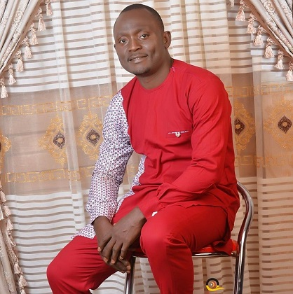
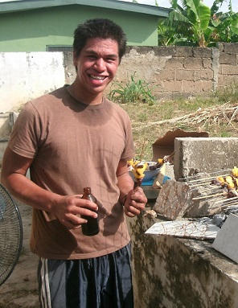

Target Audience
The audience we are focusing on are small scale, medium scale and large scale business owners in the Ejule Onu community who are resident, native or visitors of the community and its environs. As long as they are professionals who are ready to grab opportunities to network with other businesses and other professionals who are available in the area, exploring available resources from that group while seeking the growth of the community as a whole.
Engineer Daniel

Engr Daniel has been a project manager for over 10 years. Because of his job, he relocates anywhere
there is job available to do. This time around, after hearing about the many possibilities in Ejule Onu
and the friendly nature of the people in the community, he is seeking to open up a major branch of his
company in the next 4 months. He is unfamiliar with the area and needs the help of local chamber to put
in a publicity for him and attract clients to his business.
Engr Daniel hopes to get:
- Publicity for his business
- Up-to-date information on opportunities in the area
- Friendly people to work around
- Possible workforce for future jobs
Darren

Darren McFarland is an entreprenuer who deals in fishing, fishery and selling fish both fresh and smoked.
He is very good at what he does. Many people have gained confidence in his business and they know what he
can provide as far as quality and hygiene is concerned. He is looking into expanding his business beyond the
shores of his current home. Heard about the beautiful rivers located in Ejule Onu with its endless fishing
possibilities and decided to give it a try.
He desires to:
- Get his documents ready to be able to quickly move.
- Become familiar with the laws and customs of the area
- Get help to secure a good location in the community
- Get involved with community programs